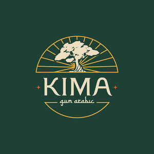

Trade Mark Journal No.2025/039 26 September 2025
UK00004228615 3 July 2025 (1,5,32,35,40)

- Class 1
- Gum arabic for industrial purposes; emulsifiers for use in the manufacture of foods and beverages; stabilizers for use in the manufacture of foods and beverages; chemical additives for industrial use; industrial food and beverage ingredients; natural plant gums for use in industry. .
- Class 5
- Dietary and nutritional supplements for human health; natural prebiotic fiber supplements; powdered gum arabic (acacia) sold as a dietary supplement; dietetic foods and beverages adapted for medical or health purposes; dietary supplements intended to supplement a normal diet or to have health benefits; dietary or nutritional supplements to improve gut health; pharmaceuticals and nutraceuticals for health and wellness.
- Class 32
- Non-alcoholic beverages; functional and nutritional drinks that are not sold as medicines; functional wellness drinks and herbal beverages (not for medical purposes); non-alcoholic drinks enriched with prebiotic fiber; syrups and powder concentrates for making functional soft drinks; plant-based drinks; prebiotic beverage preparations.
- Class 35
- Retail and wholesale services in relation to dietary supplements, natural prebiotic preparations, and non-alcoholic beverages; online retail store services relating to health supplements and functional drinks; sales promotion and marketing services for health food products; import-export agency services for nutritional supplements and beverages; bringing together, for the benefit of others, a variety of health food products, including gum arabic powders and drinks, enabling customers to conveniently view and purchase those goods.
- Class 40
- Custom manufacturing of food supplements and beverages for others; processing and blending of natural gums and plant ingredients for production of supplements and drinks; food and drink preservation and processing services; contract manufacturing services for dietary supplements, prebiotic powders, and functional beverages; advisory and consultancy services relating to the manufacture of health supplements and drinks.
kima-gum ltd